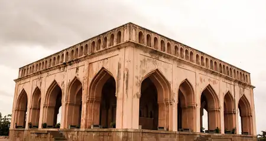

Taramati Baradari
Situated on a hilltop, Taramati Baradari is believed to be built in honor of Abdullah Qutb Shah's favorite courtesan Taramati. It is a Persian-style constructed garden and a historical Sarai having 12 doorways. It was considered an engineering genius because the doors allowed cross ventilation, which was something unique at that point in time. Many stories suggest that the structure was built so that Abdullah Qutb Shah could hear the enchanting voice as Taramati sang for the travelers staying at the Sarai, while another tale hints that two dancing sisters, Taramati and Premamati would dance on the ropes tied between the balcony of the king and the Sarai. Taramati Baradari has excellent acoustics, and because Taramati dedicated her life to dance and music, several classical music and dance performances are held at the palace. There's a large open theater in the complex with the capacity of 1600 people.- Location: Ramdev Guda, Ibrahim Bagh, Hyderabad
- Timings: 11:00 am to 06:00 pm; every day
- No entry fee